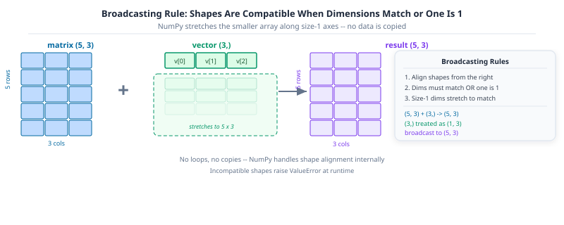

Chapter 6 ended with a question you have not answered yet: (student_data - student_data.mean(axis=0)) / student_data.std(axis=0) normalises all five rows in one expression. Why does subtracting a shape-(3,) mean from a shape-(5, 3) matrix not raise a shape error?
The answer is broadcasting: NumPy’s rule for combining arrays of different shapes by stretching size-1 dimensions, without copying data. Once you understand that rule, the gap between code that works and code that works quickly closes fast.
This chapter covers broadcasting, memory layout, vectorisation, linear algebra, saving and loading arrays, and common gotchas. By the end you will have everything you need for Chapter 8: matplotlib visualisations of the arrays you have been building.
Broadcasting is the rule NumPy uses to apply an operation between two arrays of different shapes, by virtually “stretching” the smaller one, without actually copying any data. It is what lets you write student_data - student_data.mean(axis=0) instead of a loop over rows.
Key Concept: the broadcasting rule
Compare shapes from the right-hand side. Two dimensions are compatible when they are equal, or when one of them is 1 (it gets stretched to match). Missing leading dimensions are treated as 1.
(5, 3) and (3,) → treat (3,) as (1, 3) → stretch to (5, 3). (valid) (5, 3) and (5,) → treat (5,) as (1, 5) → 3 != 5 and neither is 1. (error)
The code below normalises each column of the student data matrix. (5, 3) - (3,) broadcasts without a loop: NumPy treats the (3,) mean as (1, 3) and stretches it across all five rows.
student_data = np.array( [ [12.0, 85.0, 3.1], [5.0, 60.0, 2.4], [18.0, 95.0, 3.8], [9.0, 70.0, 2.9], [22.0, 98.0, 3.9], ])col_mean = student_data.mean(axis=0) # shape (3,): one mean per columncol_std = student_data.std(axis=0) # shape (3,)print(f"student_data.shape : {student_data.shape}")print(f"col_mean.shape : {col_mean.shape}")# (5, 3) - (3,) broadcasts the mean across every row: no loop neededstudent_data_z = (student_data - col_mean) / col_stdprint(f"normalised:\n{student_data_z}")print(f"new per-column mean (~0): {student_data_z.mean(axis=0).round(6)}")
The rule is: align shapes from the right. Dimensions of size 1 stretch to match. Everything else must match exactly or NumPy raises an error.

NumPy broadcasting: a (5,3) matrix plus a (3,) vector. The vector is stretched to (5,3) by repeating it across rows, producing a (5,3) result.
Common Mistake: broadcasting a (5,) array against a (5, 3) matrix fails for a subtle reason
If you compute per_row_mean = student_data.mean(axis=1) (shape (5,)) and try student_data - per_row_mean, NumPy raises ValueError: operands could not be broadcast together. It is comparing the trailing dimensions 3 vs 5, not what you intended. Fix it by giving the per-row result an explicit column shape with keepdims=True: student_data.mean(axis=1, keepdims=True) has shape (5, 1), which broadcasts correctly against (5, 3).
row_mean = student_data.mean(axis=1, keepdims=True) # shape (5, 1), NOT (5,)print(f"row_mean.shape : {row_mean.shape}")# (5, 3) - (5, 1) broadcasts the per-row mean across every columncentered_per_row = student_data - row_meanprint(f"centered_per_row:\n{centered_per_row}")
Every NumPy array is, at bottom, a 1D block of bytes. arr.strides exposes the step sizes that let NumPy navigate a multi-dimensional shape through that flat block. arr.itemsize is the number of bytes in one element.
Key Concept: strides map a multi-dimensional shape onto flat memory
For a float64 array of shape (5, 3): itemsize is 8 bytes, strides are (24, 8). Moving one column right costs 8 bytes (= itemsize). Moving one row down costs 24 bytes (= 3 columns × 8 bytes). Basic slicing adjusts strides without copying data: that is why reshape() and [::-1] return views instantly.
student_data = np.array( [ [12.0, 85.0, 3.1], [5.0, 60.0, 2.4], [18.0, 95.0, 3.8], [9.0, 70.0, 2.9], [22.0, 98.0, 3.9], ])print(f"shape : {student_data.shape}")print(f"itemsize : {student_data.itemsize} bytes per element") # 8 for float64print(f"strides : {student_data.strides}") # (bytes/row, bytes/col) = (24, 8)# A reversed view uses a negative stride: no data is copiedrev = student_data[::-1]print(f"reversed strides : {rev.strides}") # (-24, 8)print(f"shares memory original : {np.shares_memory(rev, student_data)}")
shape : (5, 3)
itemsize : 8 bytes per element
strides : (24, 8)
reversed strides : (-24, 8)
shares memory original : True
Activity 1: min-max scale every column
Goal: Write a one-line expression that scales every column of student_data to the [0, 1] range using the formula (student_data - student_data.min(axis=0)) / (student_data.max(axis=0) - student_data.min(axis=0)). Confirm the result’s per-column min is 0 and max is 1.
student_data = np.array( [ [12.0, 85.0, 3.1], [5.0, 60.0, 2.4], [18.0, 95.0, 3.8], [9.0, 70.0, 2.9], [22.0, 98.0, 3.9], ])student_data_scaled = ... # TODO: min-max scale every column to [0, 1]# print(f"min per column: {student_data_scaled.min(axis=0)}")# print(f"max per column: {student_data_scaled.max(axis=0)}")
8. Vectorisation vs Python loops
Now that you can express normalisation as (student_data - mean) / std with no loop, it’s worth seeing why that matters. Every NumPy operation you have used so far runs as a single compiled loop over contiguous memory; a Python for loop pays the cost of the interpreter on every single element.
Key Concept: replace loops with vectorised expressions, 10-100x faster
A Python loop over one million floats takes ~500ms. The same operation as (arr - arr.mean()) / arr.std() takes ~5ms. NumPy calls compiled C code: the Python interpreter never enters the inner loop. The speedup grows with array size.
import timebig = np.random.default_rng(0).normal(size=1_000_000)def zscore_loop(values: np.ndarray) ->list[float]: mean =sum(values) /len(values) variance =sum((v - mean) **2for v in values) /len(values) std = variance**0.5return [(v - mean) / std for v in values]start = time.perf_counter()_ = zscore_loop(big)loop_time = time.perf_counter() - startstart = time.perf_counter()_ = (big - big.mean()) / big.std()vector_time = time.perf_counter() - startprint(f"Python loop time : {loop_time:.4f}s")print(f"Vectorised time : {vector_time:.4f}s")print(f"Speedup : {loop_time / vector_time:,.0f}x")
Python loop time : 0.4295s
Vectorised time : 0.0155s
Speedup : 28x
Pro Tip: if you’re writing a for loop over an array, stop and look for a vectorised way
Almost every elementwise transformation, filter, or aggregation you would write as a Python loop already has a NumPy equivalent: arithmetic operators, np.where, boolean masks, axis aggregations. Reach for those first: a hand-written loop over a large array is one of the most common NumPy performance bugs, and it’s usually a 10-100x slowdown for no benefit.
Activity 2: benchmark loop vs vectorised z-score
Goal: Measure the speedup of vectorisation.
1. Create arr = np.random.default_rng(0).normal(size=100_000). 2. Implement a Python loop z-score (iterate element by element). 3. Implement the vectorised version: (arr - arr.mean()) / arr.std(). 4. Time both with import time and print the speedup ratio.
Expected: vectorised is 50-200x faster.
9. Linear algebra essentials
A linear model’s prediction is a dot product: multiply each measurement by a learned weight, sum the results, add a bias. @ (matrix multiplication) computes this for every student row at once, no loop required.
Key Concept: @ is matrix multiplication; use it, never loop
student_data @ w computes every row’s dot product with w in one call. Manually looping for row in student_data: sum(row * w) is correct but 100x slower. Every linear model, transformer attention layer, and PCA uses @ internally.
student_data = np.array( [ [12.0, 85.0, 3.1], [5.0, 60.0, 2.4], [18.0, 95.0, 3.8], [9.0, 70.0, 2.9], [22.0, 98.0, 3.9], ]) # shape (5 students, 3 measurements)# Suppose a (already-fitted) linear model has these learned weights and biasweights = np.array([1.5, 0.3, 8.0]) # one weight per column, shape (3,)bias =10.0# student_data @ weights: (5, 3) @ (3,) -> (5,): one prediction per studentpredicted_scores = student_data @ weights + biasprint(f"predicted_scores: {predicted_scores.round(1)}")
predicted_scores: [ 78.3 54.7 95.9 67.7 103.6]
@ on a matrix and a vector is shorthand for: for each row, multiply element-wise by weights and sum: exactly (student_data * weights).sum(axis=1). Verify the two are equivalent, then measure prediction error against the true scores with np.linalg.norm (the Euclidean / RMS-style distance):
# @ is equivalent to elementwise multiply + sum along axis=1manual = (student_data * weights).sum(axis=1) + biasprint(f"@ matches manual sum: {np.allclose(predicted_scores, manual)}")actual_scores = np.array([88.0, 65.0, 95.0, 78.0, 99.0])errors = predicted_scores - actual_scoresrmse = np.linalg.norm(errors) / np.sqrt(len(errors))print(f"errors : {errors.round(1)}")print(f"RMSE : {rmse:.2f}")
np.allclose(a, b) was used above instead of (a == b).all() on purpose: floating-point arithmetic accumulates tiny rounding errors, so two mathematically-equal results can differ in their last bit. Always compare floats with a tolerance: np.allclose, or abs(a - b) < 1e-9, never with exact ==.
Activity 3: linear prediction with @
Goal: Use matrix multiplication to compute predictions.
Using student_data from the setup section: 1. Define weights = np.array([0.3, 0.4, 1.5]) and bias = -2.0. 2. Compute predicted scores as preds = student_data @ weights + bias. 3. Confirm preds.shape == (5,). 4. Print the index of the highest-scoring student using np.argmax(preds).
10. Saving and loading arrays
A typical pipeline computes a student data matrix once and reuses it across many later steps (training, evaluation, serving). .npy stores a single array in NumPy’s own binary format: far smaller and faster to read than CSV for numeric data, and it preserves dtype and shape exactly. .npz bundles several named arrays together.
Key Concept: use .npy for one array, .npz for multiple
np.save(‘student_data.npy’, student_data) and np.load(‘student_data.npy’) preserve dtype and shape exactly. np.savez(‘data.npz’, features=student_data, target=y) bundles multiple arrays in one file. Both load in microseconds: much faster than re-parsing a CSV.
from pathlib import Pathtmp_dir = Path("tmp_numpy_activity")tmp_dir.mkdir(exist_ok=True)student_data = np.array([[12.0, 85.0, 3.1], [5.0, 60.0, 2.4], [18.0, 95.0, 3.8]])y = np.array([88.0, 65.0, 95.0])# Save a single arraynp.save(tmp_dir /"student_data.npy", student_data)student_data_loaded = np.load(tmp_dir /"student_data.npy")print(f"round-trip equal: {np.array_equal(student_data, student_data_loaded)}")# Save several named arrays together in one filenp.savez(tmp_dir /"dataset.npz", features=student_data, target=y)bundle = np.load(tmp_dir /"dataset.npz")print(f"keys : {list(bundle.keys())}")print(f"target : {bundle['target']}")
Like the Python gotchas in Chapter 4, none of these raise an exception. They silently produce a wrong (or surprising) result. Recognise them now so you do not lose hours to them later.
Key Concept: three gotchas that never raise an exception
1. View vs copy: sub = student_data[:2] shares memory; mutating sub mutates student_data. Fix: student_data[:2].copy(). 2. Integer overflow: np.array([120, 10], dtype=np.int8) wraps silently. Fix: check dtype before arithmetic. 3. Shape mismatch in broadcasting: (5, 3) - (3, 5) may broadcast unexpectedly. Always check shapes before subtracting.
# GOTCHA 1: basic slicing returns a VIEW, not a copyscores = np.array([62, 78, 85, 91, 55])top_three = scores[:3]top_three[0] =0# mutating the "slice"...print(f"top_three : {top_three}")print(f"scores : {scores}") # ...changed the original too!# Fix: copy explicitly when you need an independent arraysafe_copy = scores[:3].copy()
top_three : [ 0 78 85]
scores : [ 0 78 85 91 55]
# GOTCHA 2: integer dtype truncates on division-like ops, and can overflowsmall = np.array([120, 10], dtype=np.int8)print(f"int8 + 50 : {small +50}") # 120 + 50 = 170, overflows int8's max of 127!# Fix: use a wide-enough dtype, or let NumPy infer (default is int64/float64)safe = small.astype(np.int64) +50print(f"int64 + 50: {safe}")
int8 + 50 : [-86 60]
int64 + 50: [170 60]
# GOTCHA 3: {} is a dict, not a set: same trap as in plain Python (Chapter 4)empty_dict = {}empty_set =set()print(f"type({{}}) : {type(empty_dict)}")print(f"type(set()) : {type(empty_set)}")
# GOTCHA 4: comparing floats with == (see Sec. 9 for the fix: np.allclose)a = np.array([0.1+0.2])print(f"0.1 + 0.2 == 0.3 : {a ==0.3}") # False: 0.30000000000000004 != 0.3print(f"np.allclose : {np.allclose(a, 0.3)}") # True: tolerant comparison
0.1 + 0.2 == 0.3 : [False]
np.allclose : True
12. Capstone exercises
Apply everything from this notebook together. Each exercise is self-contained.
Activity 4: vectorised anomaly detector
Goal: Write a vectorised anomaly detector without any explicit loop. Flag any reading more than 2 standard deviations from the overall mean using a single boolean mask.
(implement z_scores and anomaly_mask above to see output)
What’s new in NumPy 2.0
NumPy 2.0 (released June 2024) is the first major version bump in almost two decades. Two changes matter most for day-to-day data science work:
Removed type aliases
The old Python-builtin aliases (np.int, np.float, np.bool, np.complex, np.object, np.str) were deprecated for years and are now fully removed. They were just aliases to the Python built-ins anyway, so the fix is mechanical:
Old (removed)
Replacement
np.bool
np.bool_ or Python bool
np.int
np.intp or Python int
np.float
np.float64 or Python float
np.complex
np.complex128 or Python complex
np.object
np.object_ or Python object
np.str
np.str_ or Python str
StringDType for proper string arrays
NumPy 2.0 introduced np.dtypes.StringDType(), a real variable-length string dtype backed by UTF-8 memory. The old np.str_ stored fixed-width UCS-4 strings (one array dtype for every character count), StringDType stores arbitrary-length strings efficiently.
Pro Tip: use np.float64 not np.float in new code
If you see a module ‘numpy’ has no attribute ‘float’ error, the codebase was written against NumPy 1.x. A global search-and-replace of np.float → np.float64 (and so on for the others in the table) is the complete fix.
import numpy as np# Old aliases are removed in NumPy 2.0: this would raise AttributeError:# arr = np.array([1, 2, 3], dtype=np.float) # removed in NumPy 2.0# Use the explicit dtype names instead:arr = np.array([1, 2, 3], dtype=np.float64) # correctprint(f"dtype: {arr.dtype}")# StringDType: variable-length strings, efficient UTF-8 storage (NumPy 2.0+)names = np.array(["Alice", "Bob", "Charlie"], dtype=np.dtypes.StringDType())print(f"names : {names}")print(f"dtype : {names.dtype}")# The old fixed-width str_ is still available but StringDType is the modern choiceold_style = np.array(["Alice", "Bob", "Charlie"]) # infers str_ (fixed width)print(f"old dtype: {old_style.dtype}") # <U7 means Unicode, 7 chars wide
NumPy 2.0 ships a dedicated np.strings module for vectorised string operations on np.ndarray values backed by StringDType. Before this module existed, string operations on object arrays required Python-level loops or np.vectorize, both of which are slow. np.strings routes each operation through a compiled C loop, making it roughly 10x faster on large arrays than the equivalent Python loop.
The module mirrors the Python str method set: np.strings.upper(), np.strings.lower(), np.strings.split(), np.strings.startswith(), np.strings.replace(), and others all work element-wise, broadcasting across the entire array in one call.
import numpy as np# Create a StringDType array of course codescourse_arr = np.array(["DATA101", "MATH201", "STATS301", "ML401"], dtype=np.dtypes.StringDType())# np.strings.upper() broadcasts across the whole array in one compiled callupper = np.strings.upper(course_arr)print("upper:", upper)# np.strings.startswith() returns a boolean array, usable as a maskprefix_mask = np.strings.startswith(course_arr, "DATA")print("DATA prefix mask:", prefix_mask)print("courses starting with 'DATA':", course_arr[prefix_mask])
upper: ['DATA101' 'MATH201' 'STATS301' 'ML401']
DATA prefix mask: [ True False False False]
courses starting with 'DATA': ['DATA101']
Pro Tip: use np.dtypes.StringDType() for string arrays that need fast operations
The default np.array([“a”, “b”]) stores strings as object dtype: each element is a Python object pointer, so any operation loops at the Python level. np.dtypes.StringDType() stores strings as contiguous UTF-8 bytes, avoids the object-dtype overhead, and unlocks the entire np.strings.* API for compiled, vectorised string work.